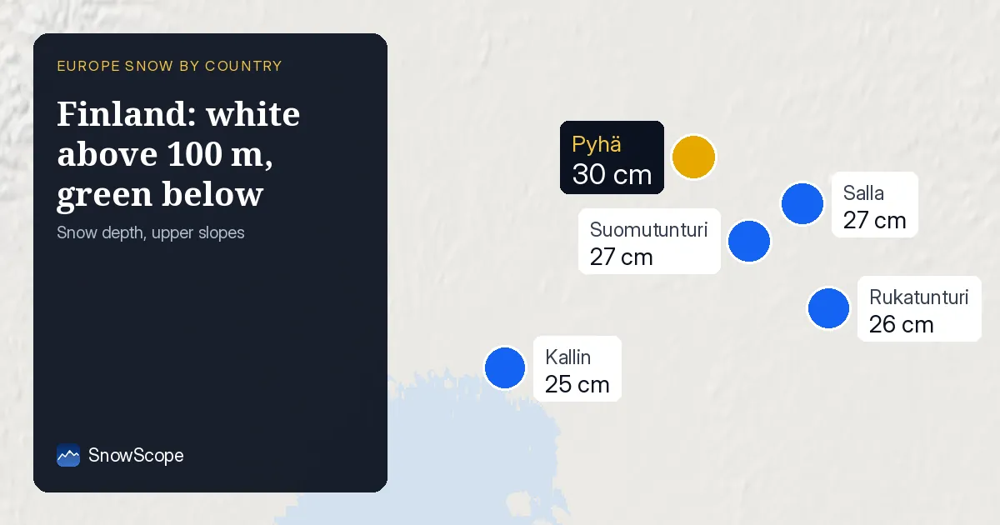
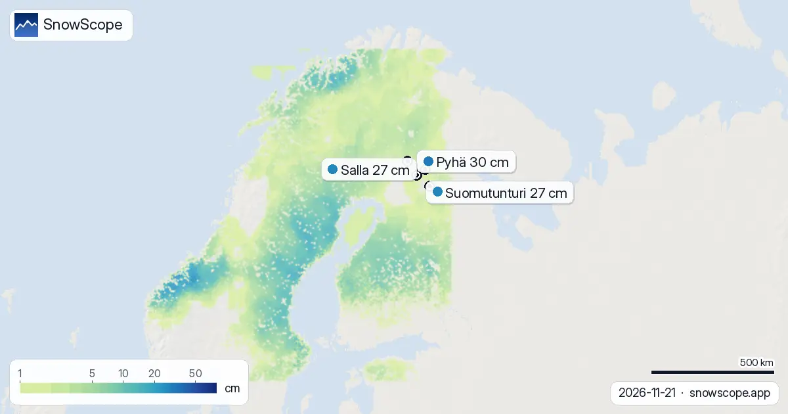
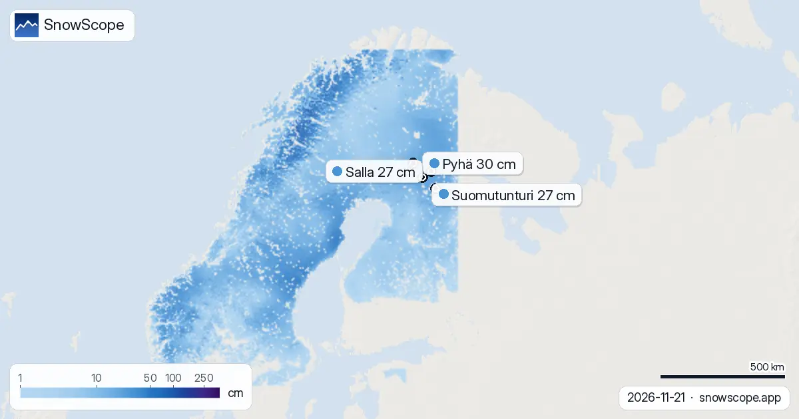

Finland: white above 100 m, green below
Finland's snow divide sits at 100 m altitude. Above that height, 77 % of the ground is white and growing. Below, the picture is mixed: grass and stones still show between the snow patches.
See the live snow forecast for Pyhä in the SnowScope appSnow depth, powder alerts and the 3D map, free.
Where the snow stops and starts
A sharp line marks the snow boundary across Finland. At 100 m—roughly the height of gentle foothills—white ground takes over. This matters because most of the country's low-lying resorts sit near sea level, where brown and green still dominate. Higher terrain, by contrast, lies under a solid base.
On 21 November, 232,900 km² of Finland's mapped area is snow-covered, a jump of 35,690 km² in just one day. That is 77 % of the high ground the SnowScope map measures.
| Resort | Snow depth | New snow, 72 h | Coming, next days | Top |
|---|---|---|---|---|
| Pyhä | 30 cm | 3 cm | 0 cm | 375 m |
| Salla | 27 cm | 1 cm | 0 cm | 462 m |
| Suomutunturi | 27 cm | 1 cm | 0 cm | 400 m |
| Rukatunturi | 26 cm | 2 cm | 1 cm | 494 m |
| Kallin | 25 cm | 2 cm | 0 cm | 65 m |

Three layers, three different stories
Snow depth shifts steeply with altitude. Between 0 and 500 m, the average is only 8 cm and cover is patchy at 77 %. Grass pokes through, rocks are visible, and runs remain thin. Between 500 and 1,000 m, everything changes: 16 cm on average and 100 % white. Upper slopes above 1,000 m offer the deepest base: 43 cm on average with full cover.
A ski resort's usable terrain depends on its peak height. Resorts with tops above 500 m can open runs in their upper zones. Those near sea level must wait for more snow to build in the valleys.

Which resorts have enough now
Pyhä leads with 30 cm, gained 3 cm over three days. Salla has 27 cm (1 cm new), Suomutunturi 27 cm (1 cm new), Rukatunturi 26 cm (2 cm new) and Kallin 25 cm (2 cm new). Of the 67 resorts tracked, 43 have snow on their upper slopes.
These five are all ahead of their usual depth for 21 November. At Pyhä, 30 cm today beats the normal 20 cm by 50 %. At Salla, 27 cm exceeds the typical 21 cm by 29 %. Rukatunturi sits 32 % above average. This early-season strength is rare: in a typical November, resorts this high stay thin until December.
The hotspot that explains the jump
One area stands out: the Kainuu hills received up to 11 cm in the past 72 hours. That burst pushed the country-wide total up steeply. In a single day (20 to 21 November), Finland gained 35,690 km² of snow cover—the largest single-day jump this week.
About 74,450 km² received at least 5 cm in three days. Sunday 22 November is forecast to be the snowiest day, with up to 6 cm possible. Over the next three days (through 24 November), up to 8 cm is expected; over the full week ahead, up to 8 cm again.
What comes next
The near term (seven days) brings modest totals but steady accumulation. By early December the pace slows: days 8 to 14 (late November into early December) offer only about 4 cm. This window means resorts can open pistes quickly over the next few days if the cold holds.
The white area on 21 November (232,900 km²) is roughly where it stood a week ago (236,430 km²), so the country's overall snow cover has stabilized after earlier fluctuations. Week by week: 16 November 157,360 km²; 20 November 192,860 km²; 21 November 232,900 km².
How Finland stacks up
Neighbours tell a different story. Sweden is 95 % white with Björkliden at 138 cm and 12 cm forecast over the week. Norway is 92 % white with Riksgränsen at 167 cm and 26 cm forecast. Finland's 77 % coverage and depths of 25–30 cm at top resorts put it well behind the Nordic peaks, but the rapid growth this week shows the season is building fast.
For skiers, the key is that high-altitude terrain is now ready, while lower runs remain a gamble. Plan runs above 500 m for a continuous base; below that altitude, expect patches of snow mixed with exposed ground.
Tips for skiers
- Ski above 500 m where the ground is fully white. Below that height, terrain is patchy and stones may catch edges.
- Check your resort's lift status and opening dates before travel; snow on the map does not mean pistes are prepared.
- Fresh snow on a cold base can be slippery on steep terrain. Take care on south-facing slopes in the afternoon sun.
- In a week, conditions will improve further if the forecast snow falls. By early December the pace slows, so this week is the window for the best early-season gains.
- Morning snow is firmest after a clear night; wait for the sun to soften upper slopes before skiing there.
About these numbers
Resort snow depths are the deepest snow on the resort's upper slopes on the date shown; they are estimates for an area, not a measurement at one point. Forecasts can change. Always read the official avalanche bulletin before going off-piste.
Cite this report
For research, teaching or the press: the numbers and charts are free to reuse under CC BY 4.0 with this citation.
SnowScope (2026), Finland: white above 100 m, green below, https://snowscope.app/blog/en/2026/11/finland-snow-line-21-november-2026.html, accessed 2026-11-21
SnowScope (Atlas Labs). (2026, November 21). Finland: white above 100 m, green below. SnowScope snow reports. https://snowscope.app/blog/en/2026/11/finland-snow-line-21-november-2026.html
BibTeX
@misc{snowscope2026finlandsnowline21novembe,
author = {{SnowScope (Atlas Labs)}},
title = {Finland: white above 100 m, green below},
year = {2026},
month = nov,
howpublished = {\url{https://snowscope.app/blog/en/2026/11/finland-snow-line-21-november-2026.html}},
note = {Published 2026-11-22 10:03 UTC; accessed 2026-11-21}
}· CC BY 4.0 · Methods, data and tools →
Pyhä: snow and temperature by height, this winter vs last (tools) →
Follow Pyhä
Free: a message when fresh snow is coming, and the forecast every morning.
More snow reports

Only Borovets and Bansko have a trace of snow at the top today, 2 cm each. A week ago Borovets had 11 cm. Day by day, and the one snowy day in the forecast.

From 13 to 19 November 2026 Slovenia got the most snow and kept it; Serbia and Croatia had a deep but short white weekend; Montenegro only on Durmitor; Bulgaria almost none. The ranking, with links to each country report.

Snow is falling on Slovenia's ski mountains today: about 37 cm on Kanin and 21 cm on Krvavec. Where the snow lies, how it compares with past winters, and the next snowy day.